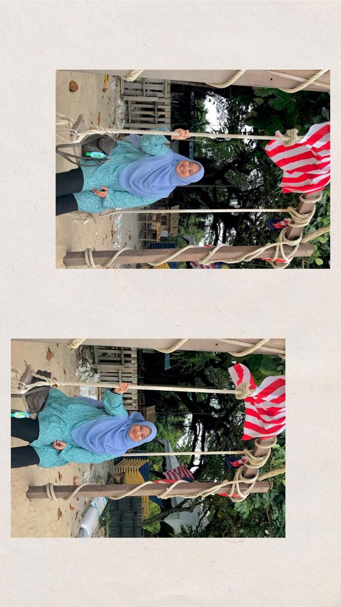

＊*•̩̩͙✩•̩̩͙*˚ 𝒌𝒆𝒆𝒑 𝒈𝒐𝒊𝒏𝒈, 𝒌𝒆𝒆𝒑 𝒈𝒓𝒐𝒘𝒊𝒏𝒈 ˚*•̩̩͙✩•̩̩͙*˚＊
My name is Nursarafiena Syazwanie Binti Suhaimi. Usually people will call me Fiena.
I am from Kangar, Perlis. I was born in 29 September 1999 at Hospital Besar Kangar.
I have 3 siblings including me and I am the only daughter in my family.
I said I am reliable because my family and friends can count on me.
I am always the first person that my friends call because they know I am always there for them.
Being the only girl in my family, my parents always rely on me in doing house-chores, helping them
in coping with technological changes and other things.
Night or day, I make sure to take care of the people in my life. I put the same effort into
making sure my work is done correctly, and I am always available to help my team members.
Next, I can work with people very well even though I don't know them. I can easily communicate and make friend with them.
Being a team oriented person, I am responsible and I can do my task very well. I can always help and support my teams.
In addition, once I start doing my task, I become very committed. I won't leave my workspace unless I finished doing my task.
I am someone who strives to complete my task on time and someone who would push herself out of her comfort zone.
I have so many thing to achieve and I can endure whatever weighing me down in order to make my dreams into reality.
Hobbies are our daily lives activities which we must do. It helps us to get escaped from the daily crush of life.
It gives us immense pleasure and peace of body, mind and soul.
My hobbies are :
Here's the application that I use when listening to music
Thank you for visiting. Please come again.
𝐿𝑜𝓋𝑒, 𝒮𝒶𝓇𝒶𝒻𝒾𝑒𝓃𝒶 𝒮𝓎𝒶𝓏𝓌𝒶𝓃𝒾𝑒
Click here to go to the top of my home page.
© NURSARAFIENA SYAZWANIE BINTI SUHAIMI. Last updated 22 nd November 2020